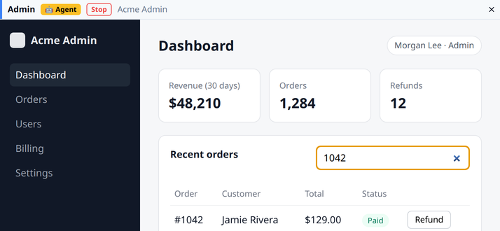
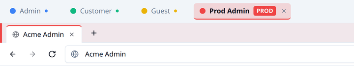
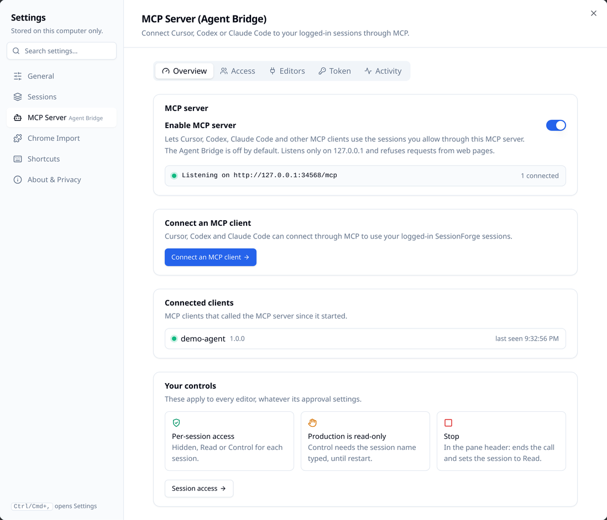

Your app's users, ready for your coding agent.
SessionForge is a free, open-source desktop browser that keeps each logged-in user in its own isolated session, shows them side by side, and lets Cursor, Codex and Claude Code test every role through a local MCP server.
No account, no cloud, no telemetry. Other platforms and install notes
A real recording, no sound, about 19 seconds. A coding agent connected over MCP finds order #1042 in the Admin pane and refunds it, and the Customer pane shows "Refunded" a second later. Then four roles sit in a 2x2 grid, one of them production.
Every role, logged in, side by side.
Each session has its own cookies, storage and cache, so Admin, Customer and Guest stay logged in at once. Show up to four in one window, each with its own colour.

Your coding agent uses the sessions you are logged in to.
Cursor, Codex and Claude Code connect to a local MCP server. The agent opens pages, clicks, types, reads logs and compares roles, while an Agent label and a Stop button show which pane it is using.


Production stays read-only for agents.
Production sessions get a red PROD label. Agents can only read them unless you type the session name to confirm, until SessionForge restarts. Environment safety


Send a Chrome login in one click.
Already logged in in Chrome? SessionForge Import copies that login into a new session. It reads a site only when you click Send, and sends only to SessionForge on 127.0.0.1.

Settings that explain themselves.
Turn the MCP server on, see who is connected, and set what agents may do per session, all in one place.


Four steps from login to agent test.
- 01
Create a session per role
Name it, pick a colour and an environment, and log in once.
- 02
Or send your Chrome login
Click SessionForge Import, then Send to SessionForge.
- 03
Put them side by side
Columns, rows or a 2x2 grid with the layout buttons.
- 04
Let your agent test every role
Turn on the MCP server and add it to your editor. Stop any time.
Connect Cursor, Codex or Claude Code.
The server runs inside SessionForge at http://127.0.0.1:34568/mcp.
- In Settings → MCP Server / Agent Bridge, turn on Enable MCP server.
- Click Copy export line and add it to
~/.bashrcor~/.zshrc:
export SESSIONFORGE_TOKEN='sfa_…'- Add the server to your editor, then restart it from that shell:
.cursor/mcp.json in a project, or ~/.cursor/mcp.json for all projects.
{
"mcpServers": {
"sessionforge": {
"url": "http://127.0.0.1:34568/mcp",
"headers": {
"Authorization": "Bearer ${env:SESSIONFORGE_TOKEN}"
}
}
}
}~/.codex/config.toml, shared by the Codex CLI, VS Code extension and app.
[mcp_servers.sessionforge]
url = "http://127.0.0.1:34568/mcp"
bearer_token_env_var = "SESSIONFORGE_TOKEN"Run once. Keep the single quotes so the token never lands in ~/.claude.json.
claude mcp add --transport http --scope user sessionforge http://127.0.0.1:34568/mcp --header 'Authorization: Bearer ${SESSIONFORGE_TOKEN}'Checks, approvals and the stdio bridge: MCP setup docs.
An agent next to real logins needs limits.
- Off by default, and listens on 127.0.0.1 only.
- Web pages can't reach it: requests with an Origin header are refused.
- 256-bit bearer token, stored encrypted with the OS keyring.
- Hidden, Read or Control per session. New sessions start at Read.
- Stop in the pane header, and an activity log of every call.
- No eval, CDP, file or shell tool. Secrets are redacted.
What people use it for.
Test multiple user roles at once
Keep Admin, Customer and Guest logged in and watch them side by side.
Read more →A logged-in browser for your coding agent
Let Claude Code, Cursor or Codex check your app as each role.
Read more →Exploratory QA with your agent
Walk a sheet of test cases per role and record what happened.
Read more →Compare: SessionForge vs Chrome profiles · SessionForge vs Playwright
Install SessionForge.
Free for macOS, Windows and Linux. The builds are not signed yet, so the first launch asks you to confirm; the install guide shows how. Or run it from source.
| System | File |
|---|---|
| macOS, Apple Silicon | -mac-arm64.dmg |
| macOS, Intel | -mac-x64.dmg |
| Windows 10/11 | -win-x64-setup.exe |
| Linux (Debian, Ubuntu) | -linux-amd64.deb |
| Linux (other) | -linux-x86_64.AppImage |
Questions.
Is SessionForge free?
Yes. It is open source under Apache-2.0, and every feature of the desktop app will stay open source. There is no paid "pro" version of the local app.
Does it send my data anywhere?
No. There is no telemetry, no analytics and no account. On its own SessionForge makes one update check a day to GitHub, which carries no data about you and can be turned off in Settings → General.
Which coding agents work with it?
Cursor, Codex (CLI, VS Code extension and app), Claude Code and any other MCP client. Connect over Streamable HTTP at 127.0.0.1:34568/mcp, or through the included stdio bridge.
Is the MCP server on by default?
No. Nothing listens until you turn on Enable MCP server in Settings → MCP Server / Agent Bridge, and new sessions start at Read access.
Can an agent act in production sessions?
Only read, unless you type the session name in Settings to confirm. That confirmation lasts until SessionForge restarts.
Can I sign in with Google inside SessionForge?
Google blocks sign-in inside embedded browsers, and SessionForge is one. Use the Sign in with Chrome banner instead: sign in in Chrome, then send the login with the SessionForge Import extension.
What does the SessionForge Import extension do?
It copies the login of the current Chrome tab into a new SessionForge session with one click, and sends the login back for Sign in with Chrome. It has no site access at install, reads a site's cookies and localStorage only when you click Send, and sends them only to SessionForge on 127.0.0.1. It is free on the Chrome Web Store.
Why does macOS say SessionForge can't be opened?
The macOS build is ad-hoc signed but not notarized yet. Click Open Anyway in System Settings → Privacy & Security, or run it from source.
Does SessionForge replace Playwright?
No. SessionForge is for exploring and checking roles with real logins, by you and your agent. Playwright runs repeatable suites in CI. Exporting a session for Playwright is planned, not shipped.
Does it support Firefox or Safari?
No. SessionForge is an Electron app, so every session runs Chromium.